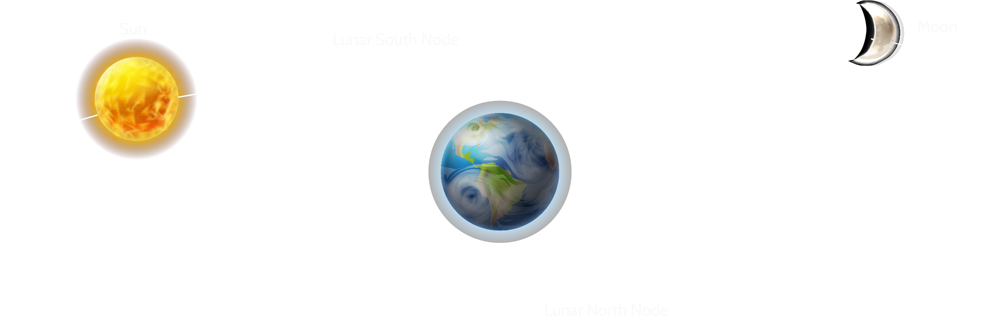

Lunar Node Calculator

The lunar nodes are points in the sky where the orbits of the moon and Earth intersect. The astrological signs within the North and South nodes sit opposite one another. These signs change at roughly 18-month intervals. Your North and South nodes can tell you a great deal about the purpose and trajectory of your life.
Lunar Node Calculator
Your North node represents your life's purpose. This is the ultimate destination where you've achieved complete self-actualization. The traits and qualities the North node represents are those that you need to actively pursue and work on. The North node symbolizes your future and all that you can become when you stretch yourself beyond your comfort zone and strive for something more.
Your South node represents where you came from. The qualities of this node were likely developed in a previous lifetime. As such, they're already deeply ingrained — perhaps too much so. It's dangerous to fall back too heavily on your South node qualities as this will inhibit growth and keep you stuck in a motionless mindset.
Result
Lunar Nodes
Signs
Houses
North Node

Aries
1st House
South Node
Libra
7th House
You're great at managing and balancing relationships, having spent lifetimes honing your interpersonal skills. However, it's now time for you to spread your wings and take on a new level of independence. You likely struggle with codependency and have a tendency to put others' needs before your own. You need to learn how to master self-care, listen to your intuition, and trust yourself to stand up on your own. Your destiny includes an amazing solo venture that just might change the world.
Speaking with a psychic astrologer can help you explore the deeper meanings and implications associated with your North and South nodes. Understanding the placement of these key planets will help you understand and optimize the road map for your life.
Start Agin